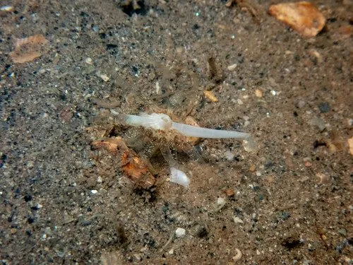

其他无脊椎动物 · 动物界
沙海葵 Edwardsia claparedii

体呈长筒形、埋在沙中只露触手的小型海葵，栖于潮间带沙质滩涂，受扰即缩入沙内，欧洲至东亚有分布。
- 分类
- 门刺胞动物门纲珊瑚纲目海葵目科爱氏海葵科属爱氏海葵属
- 栖息环境
- 潮间带细沙与沙泥滩涂，垂直穴居
- 地理分布
- 欧洲大西洋沿岸至东亚的沙质潮间带
- 保护级别
- 常见种，无保护级别；滩涂围垦与污染是威胁
物种志
沙海葵的体呈长筒形，长约三至六厘米，体壁薄，呈淡黄至肉色，埋于沙中。口盘周围有两圈触手，共十余至二十枚，触手细长，末端略尖。体表有细密的壁孔，可分泌黏液粘住沙粒加固洞穴。它没有骨骼，靠体内水压维持形态，伸展时体柱可拉得很长。
它分布于欧洲大西洋沿岸至东亚的潮间带沙质滩涂，栖息在细沙或沙泥底质中，垂直穴居，只把触手伸出沙面。它以触手捕捉小型甲壳类、多毛类和有机颗粒，受扰动时会迅速缩回沙内，速度极快。它雌雄异体，繁殖期释放配子，幼虫浮游后沉降。它对沉积物污染和滩涂围垦敏感，是沙质潮间带常见的小型底栖动物。
形态与习性
- 体长约三至六厘米，长筒形
- 触手两圈共十余至二十枚，细长
- 穴居垂直埋于沙中，只露触手
- 食性小型甲壳类、多毛类与有机颗粒
- 防御受扰迅速缩回沙内
- 繁殖释放配子，幼虫浮游后沉降
趣味知识
- 沙面上那一小圈触手，往下是一根埋了十几厘米的长筒。
- 它缩回去只要一两秒，铲子还没落下就只剩一个洞。
- 它用黏液把沙粒粘在体壁上，给自己糊了一层沙壳。